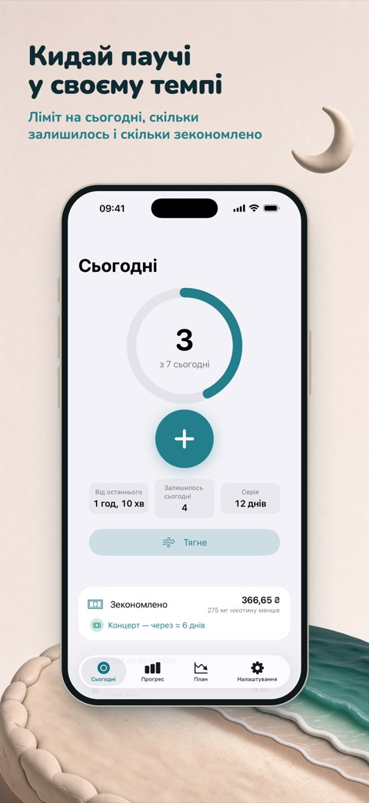
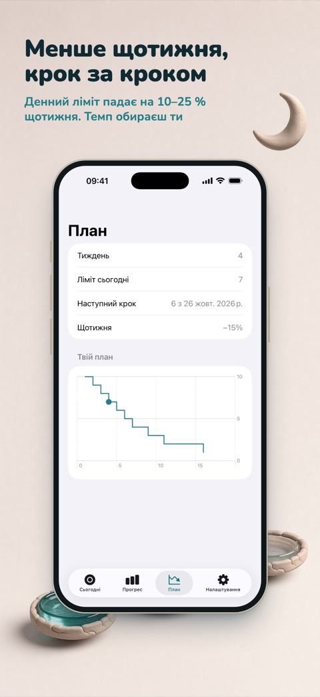
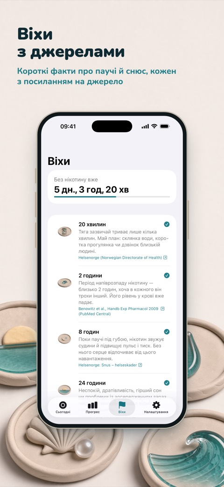

Кинь нікотинові паучі у своєму темпі
Ebb — застосунок для iPhone для тих, хто хоче скоротити або кинути нікотинові паучі й снюс. Записуй паучі в один дотик, іди за планом, що щотижня трохи знижує ліміт, і дивись, як зекономлені гроші стають мрією.



Два шляхи
Скоротити. Денний ліміт щотижня знижується на 10–25%, а Ebb показує, скільки лишилось на сьогодні. Перевищення просто записується, без покарань.
Кинути зараз. Таймер від останнього паучі й дванадцять віх від 20 хвилин до року, кожна з коротким фактом і посиланням на джерело.
Скільки тобі коштують паучі?
Підстав свої цифри.
- За місяць
- За рік
- За п'ять років
Ebb рахує це з твоїх реальних записів і показує, як скоро заощаджене покриє те, чого ти хочеш.
Приватність
Без акаунта й реклами. Записи лишаються на твоїх пристроях, а з Ebb Pro синхронізуються через твій власний iCloud. Базові функції безкоштовні, Ebb Pro — річна підписка або разова покупка, ціни й умови показує App Store.
Ebb для дорослих 18+. Це не медичний застосунок, і він не дає медичних порад.
Часті питання
Що таке Ebb?
Ebb — застосунок для iPhone (iOS 17 або новіша) для дорослих, які хочуть скоротити або кинути нікотинові паучі й снюс. Ти записуєш кожен паучі в один дотик, ідеш за денним лімітом, що щотижня знижується, або за таймером з віхами й джерелами, і бачиш, скільки заощаджуєш.
Чи Ebb безкоштовний?
Базові функції безкоштовні: необмежені записи, обидва режими, зекономлені гроші, до трьох мрій, усі віхи й малий віджет. Ebb Pro додає повну історію й аналітику, власні плани, Apple Watch, усі віджети й синхронізацію через iCloud. Pro — річна підписка або разова покупка; ціни показує App Store.
Чи підходить Ebb і для паучі, і для снюсу?
Так. Ebb працює з будь-якими нікотиновими паучі та снюсом: ти вказуєш, скільки вживаєш на день і скільки коштує банка.
Чи потрібен акаунт?
Ні. Без акаунта й реклами. Записи лишаються на твоєму iPhone, а з Ebb Pro синхронізуються через твій власний iCloud.
Чи дає Ebb медичні поради?
Ні. Ebb — не медичний застосунок. Віхи цитують державні служби охорони здоров'я, університети й наукові огляди з посиланням на кожне джерело. Про нікотинозамісну терапію поговори з лікарем або фармацевтом.